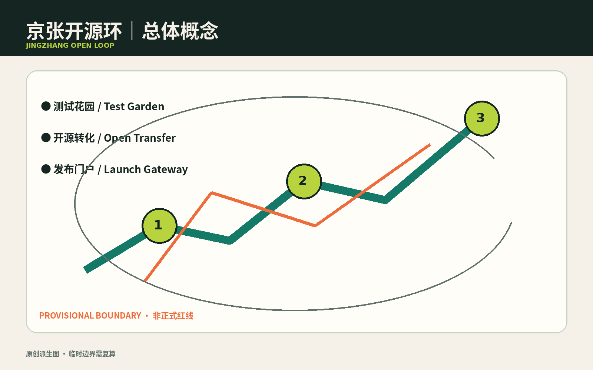
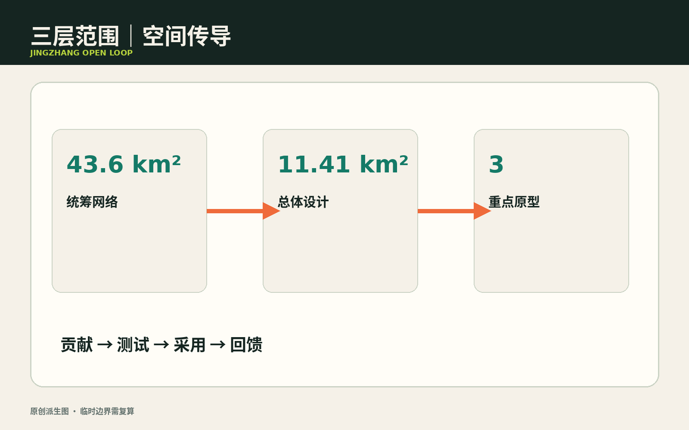
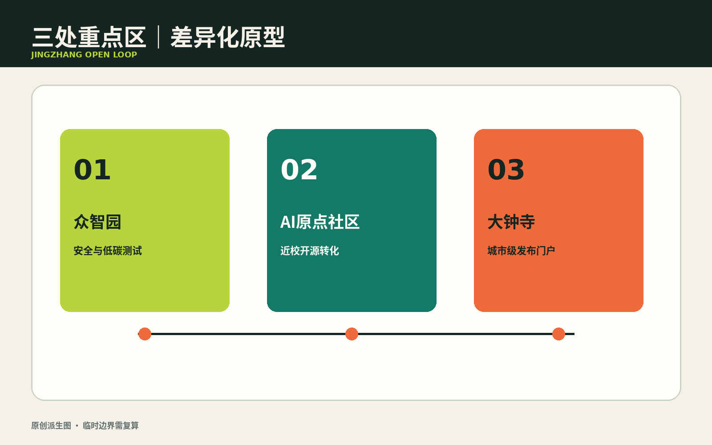
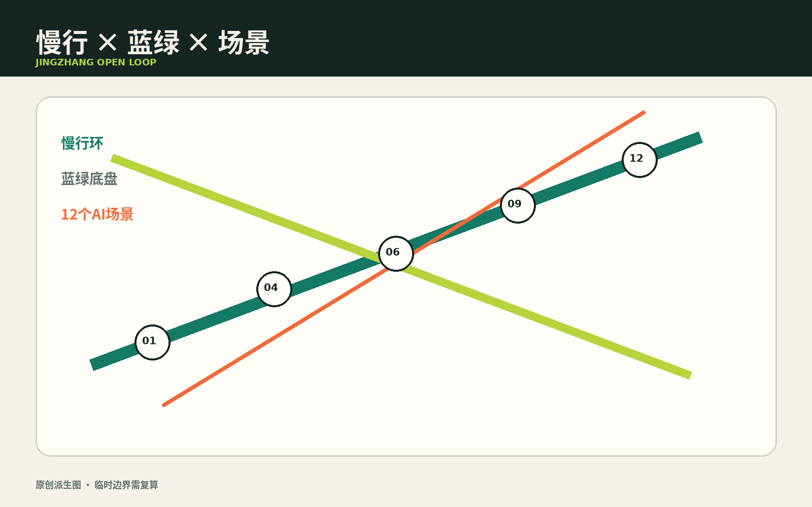
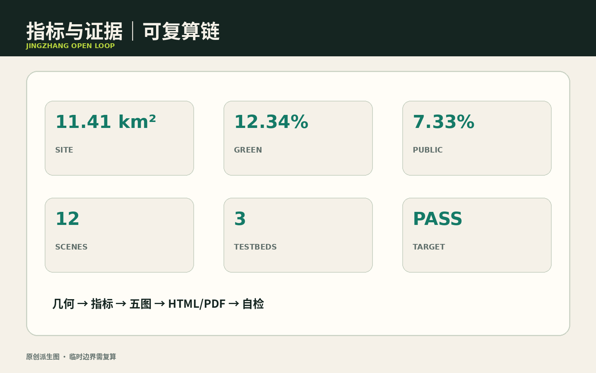

总览地图 · 三层范围

用地分区 · 建筑

重点区域 · 更新项目

交通慢行 · 蓝绿公共空间

AI 场景 · 任务覆盖

核心指标 · 自检状态 · 假设
11,412,825.386 m²site_area_sqm
12.3423%green_ratio
7.3281%public_space_ratio
通过后由自动自检持久化
来源：指标来自包内 metrics.json，并由提交的 GeoJSON 图层复算。面积与比例基于临时几何，正式多边形发布后复算。